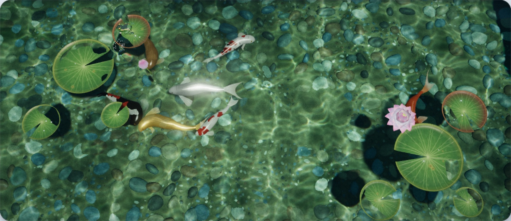
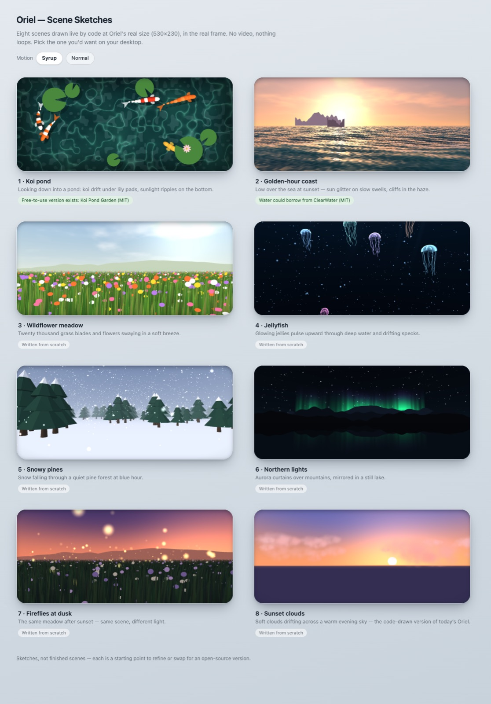

- Problem
- I wanted calm, living scenes, not looping videos.
- Built
- Interactive 3D scenes assembled from open-source parts, starting with a koi pond with real light rippling on the stones.
- Result
- A pond that never repeats, running smoothly in an ordinary browser.
How it works
- I write a short brief for each scene
- Open-source 3D parts are found and catalogued
- The scene is assembled and tuned in the browser
Screenshots

The koi pond, rendered live
Sketches for the scenes that come nextThree more living scenes after the koi pond: a coastline, a meadow and jellyfish.